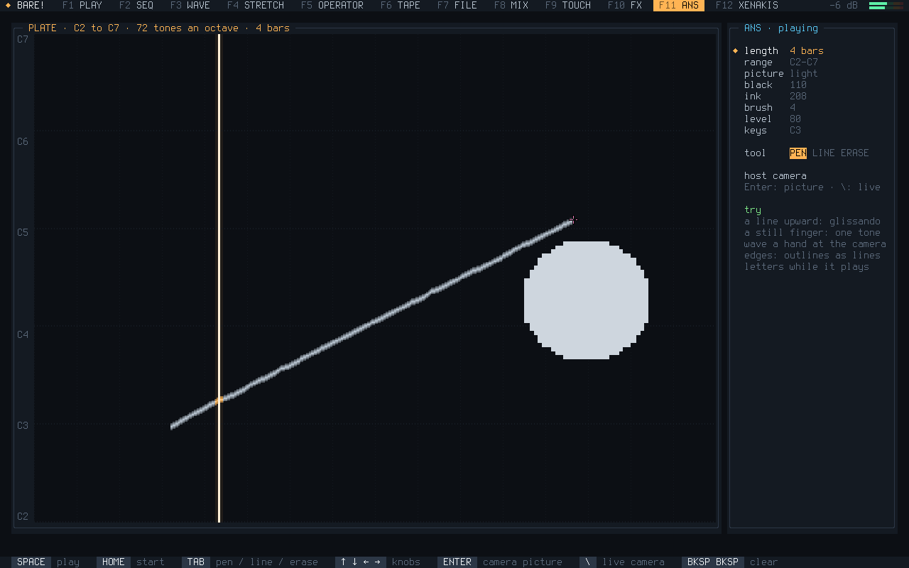
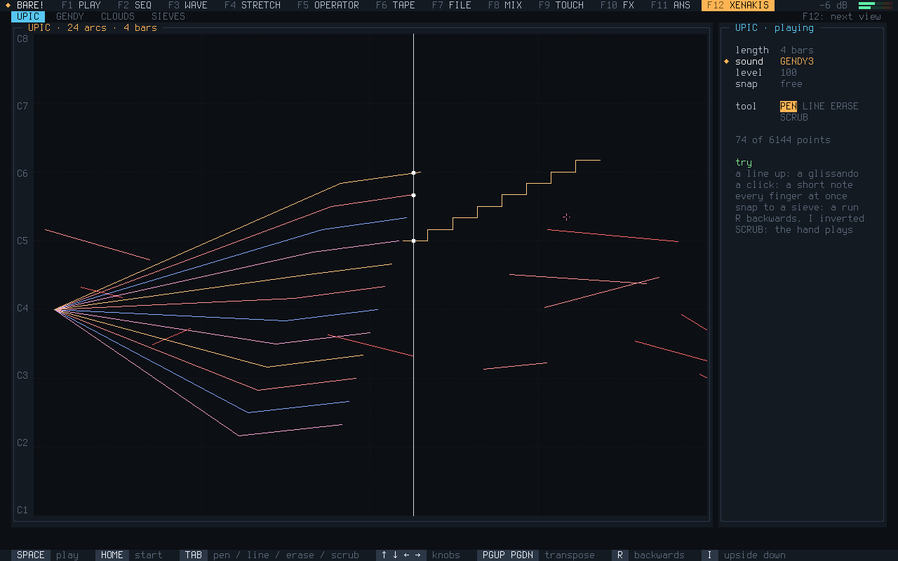
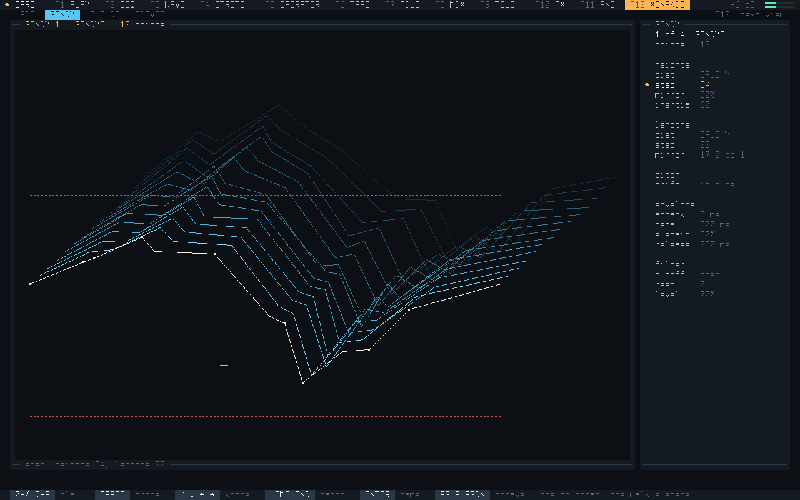
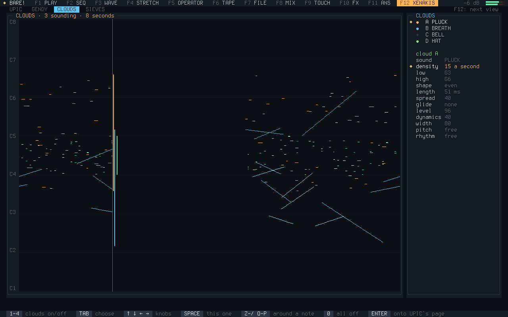
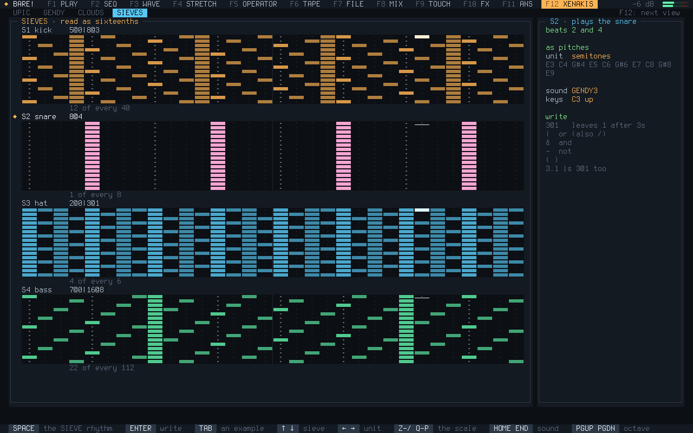

Twelve pages, one for each F key. Everything plays at once: a song on the tracker, a chord held on PLAY, the tape rolling, the camera reading the ANS plate. It runs from memory, so once it has started the stick can come out.

An omnichord: chord buttons on the number row, a strum plate on the letters and the touchpad, a rhythm section with a bass that follows the chord.

A tracker: patterns of eight channels, an order list, effect columns, every note on the exact sample.

A Fairlight-style page, green on black: waves drawn with the touchpad, harmonics, a 3D stack of them, and a sampler.

Freezes the phrase you just played and stretches it, up to a thousand times slower, while you play on.

Four-operator FM: eight algorithms, envelopes, an LFO, four patches to play anywhere.

An eight-track tape with reels, wow and hiss: record, overdub, loop, bounce, build whole songs.

Projects on the stick, songs out as WAV, MIDI and Ableton Link, the log, and an installer.

A strip for every source, sends to an echo and a reverb, and a filter, drive and crusher on the master.

A crackle box: eight bare pads of a small circuit. Two fingers close it, and pressing harder bends it.

Effects to play live over a song: repeat, reverse, tape stop, gate, a dub throw, a reverb freeze.

Murzin's ANS: a plate of 360 tones read by a moving slit. Draw on it, or let the camera be the score.

Four of Xenakis's ways of making music: UPIC's drawn arcs, GENDY, stochastic clouds and sieves.


